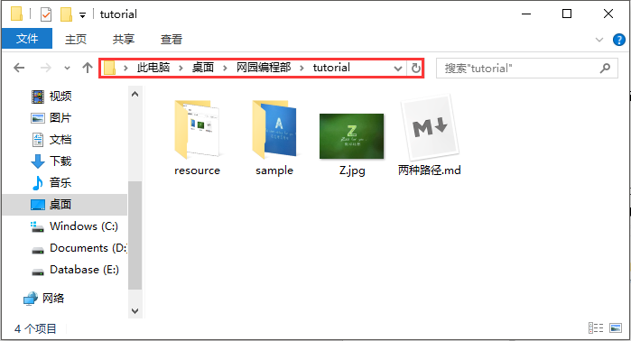
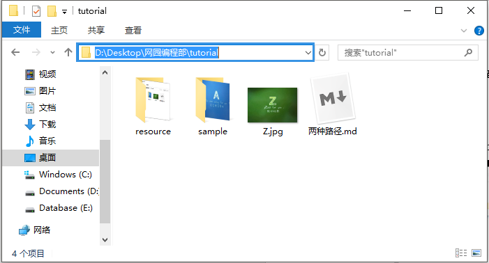
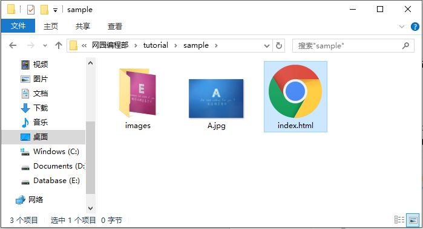
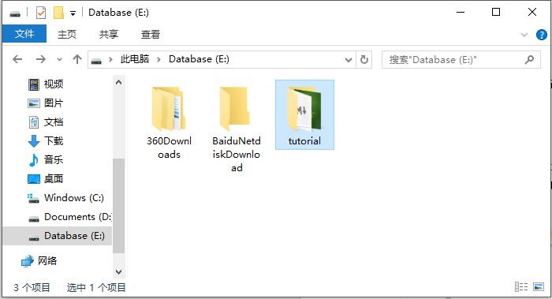
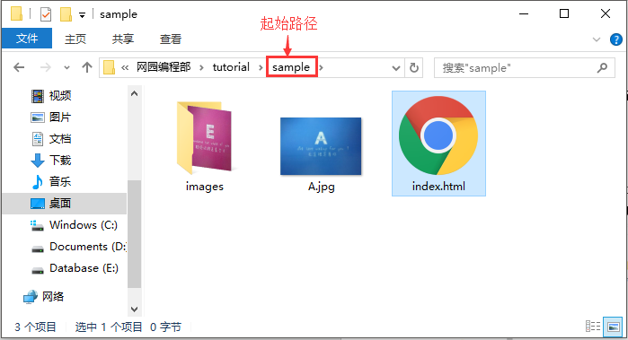
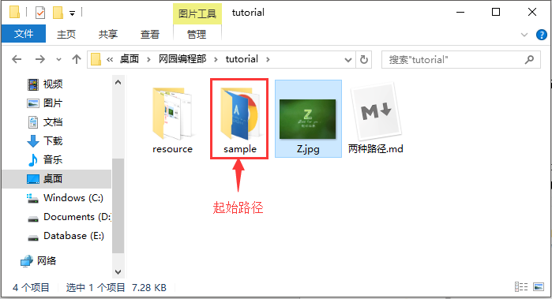
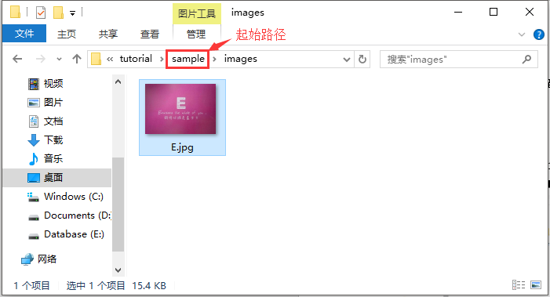

网园资讯工作室 编程部 2017/10/06
用户在磁盘上寻找文件时，所历经的文件夹线路叫路径。路径分为绝对路径和相对路径。
绝对路径 ：从根文件夹开始的路径。
相对路径 ：从当前文件夹开始的路径。
一般官方的解释都是难以理解的，那就举栗子说明一下吧，请看下图：

上图中，红色框框内所显示的内容，就是我当前打开的这个文件夹的路径。
现在我用鼠标点一下红色框框，这个路径就显示出来了，如下图蓝色框框所示：

注意看，
D:\Desktop\网园编程部\tutorial就是当前打开的这个文件夹的绝对路径。它是从“D:\”即D盘开始的，也就是上文官方定义中说的“从根文件夹开始”，这里的“D:\”就是根文件夹。同理，“C:\”、“E:\”也是根文件夹。凡是这样的路径，都称为绝对路径。现在我打开上图中的“sample”这个文件夹，选中“index.html”这个文件，见下图：

那么，我该如何描述这个文件的路径呢？是不是D:\Desktop\网园编程部\tutorial\sample\index.html ？没错，就是这样的！但是现在问题来了，如果我把tutorial这个文件夹移动到E盘，现在“index.html”这个文件的路径还是像刚刚那样来描述吗？显然不是的，显然现在的路径变成了E:\tutorial\sample\index.html 。

我们知道，在网络开发中，移动文件、复制文件是常有的事情。你在本地写好的网页，要放到服务器主机里才能让其他人可以访问，此时文件路径也一定发生了变化，如果还是用绝对路径，就会导致你在本地可以正常访问的文件，到了别的电脑就访问不了了。那么，要怎样解决这个问题呢？这就涉及到了
相对路径了。关于相对路径，只需要记住三个关键知识即可：
- 相对路径是以当前文件所在的位置为参考点，即路径的开始位置不再是根文件夹，而是当前文件夹。
- 当前文件夹用
./表示。- 上一级文件夹用
../表示。记住这三点就好办了，假设我的当前文件夹为sample所在的文件夹，现在我们用相对路径再来描述一下刚刚那个index.html的路径。你会发现，不管我是放在D盘，还是移动到E盘，都可以用
./index.html来描述这个文件。同理，可以用../Z.jpg来描述“Z”这个图片，可以用./images/E.jpg来描述“E”这个文件。


到这里，能够理解绝对路径和相对路径了吧？
不知道你们发现没有，上文中，有些路径是用反斜杠“\”的，也有用斜杠“/”的。
例如
E:\tutorial\sample\index.html用的就是反斜杠，./index.html用的就是斜杠。那么，斜杠和反斜杠有什么区别呢？其实，在表示路径时，用斜杠和反斜杠都一样。但是，在编程语言中，反斜杠往往用来表示转义字符，例如“\n”是用来表示换行，因此，用反斜杠来表示路径，往往会被误以为是转义字符，从而造成文件路径指向错误。所以呢，在写代码的时候，一般采用斜杠而不使用反斜杠。
前面讲得很清楚了，所以以后没有特殊情况，只要涉及路径，都用相对路径，都用斜杠。当然，“./”是可以省略的，即“./images/E.jpg”跟“images/E.jpg”是一样的。但是“../”是不能省略的。如果要描述上一级目录的上一级目录呢？很简单，直接“../../”。